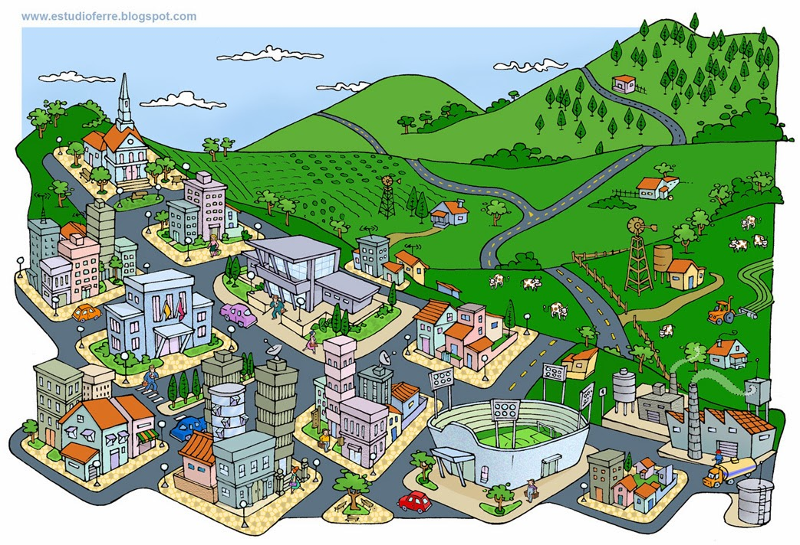

O tema "Festejando a Conexão Campo-Cidade" busca celebrar a interação e a complementaridade entre o campo e a cidade, duas realidades que, apesar de parecerem muito diferentes, estão cada vez mais entrelaçadas. O conceito pode abordar vários aspectos dessa relação, seja de forma simbólica ou prática, e pode ser explorado de muitas maneiras criativas. Aqui estão algumas formas de entender e explorar esse tema: 1. Cultura e Tradições Do campo para a cidade: Uma festa que resgata as tradições rurais, como danças típicas, músicas folclóricas e comida caseira, mas de uma forma que também dialogue com o ambiente urbano. A chegada das inovações urbanas ao campo: Pode também celebrar como a tecnologia, o comércio e os estilos de vida urbanos estão transformando o campo. Isso pode incluir a modernização da agricultura, o uso de novas tecnologias no campo e a troca de saberes entre ambos os mundos. 2. Sustentabilidade e Agricultura Conexão ecológica: Um foco na relação entre o campo e a cidade também pode destacar práticas sustentáveis, como a agricultura urbana, hortas comunitárias nas cidades, e a troca de conhecimentos sobre a preservação do meio ambiente. Comida de origem local: Uma maneira de celebrar a conexão entre os dois espaços pode ser a valorização de alimentos que vêm do campo e que chegam até a cidade, destacando o trabalho dos agricultores locais e a importância do consumo consciente. 3. A Mobilidade e as Trocas Pessoas que transitaram entre esses mundos: Quem viveu ou ainda vive essa mudança de vida, como os “caipiras” que migram para as grandes cidades ou, ao contrário, os “urbanitas” que se mudam para o campo. Isso pode gerar histórias interessantes e um sentimento de troca de experiências. O impacto da migração rural-urbana: A festa pode levantar debates sobre os desafios e as oportunidades que surgem quando as pessoas deixam a zona rural e se mudam para a cidade, ou quando há um movimento contrário. 4. Estilo de Vida A vida mais tranquila do campo x a agitação da cidade: Como cada ambiente influencia o estilo de vida das pessoas, seus comportamentos, valores e até a saúde mental. Arquitetura e Design: A mistura de elementos rurais e urbanos, como móveis rústicos sendo incorporados a espaços urbanos, ou até mesmo espaços públicos que imitam o campo. 5. Simbolismo e Estética A junção de elementos visuais dos dois universos, como flores, árvores, estradas de terra e celeiros, misturados com prédios, luzes de neon e grafites urbanos, pode criar um ambiente visualmente interessante e acolhedor para a festa. Em resumo: O tema "Festejando a Conexão Campo-Cidade" é uma maneira de explorar e celebrar a interação entre esses dois mundos. Pode ser uma festa que busca valorizar as contribuições de ambos os lados para a vida cotidiana e destacar como, embora distintos, eles se influenciam mutuamente.
